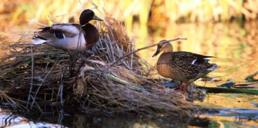

Vive nelle zone umide d'acqua dolce quali: paludi, stagni, laghi e fiumi calmi, in tutte le regioni temperate e subtropicali dell'America settentrionale, dell'Europa, dell'Asia; le varietà selvagge sono state anche introdotte in Nuova Zelanda e in Australia, dal livello del mare fino a 2000 metri d'altitudine. Vive sull'acqua, e va sulla terra ferma soltanto per la nidificazione, la caccia di lucertole e il riposo. Le popolazioni boreali svernano al sud, gli esemplari dell'Europa settentrionale svernano nella parte centro meridionale del continente, tuttavia alcuni esemplari non migrano, e in alcune regioni come il nord d'Italia sono stanziali. Questo fenomeno sembra in aumento, particolarmente nelle città dove i germani reali sembrano trovare un'alimentazione sufficiente. Un altro fenomeno da evocare è l'inquinamento genetico (ibridazione con razze domestiche), che renderebbe i germani più pesanti e corpulenti dunque meno sensibili al freddo ma anche meno adatti alla migrazione.
